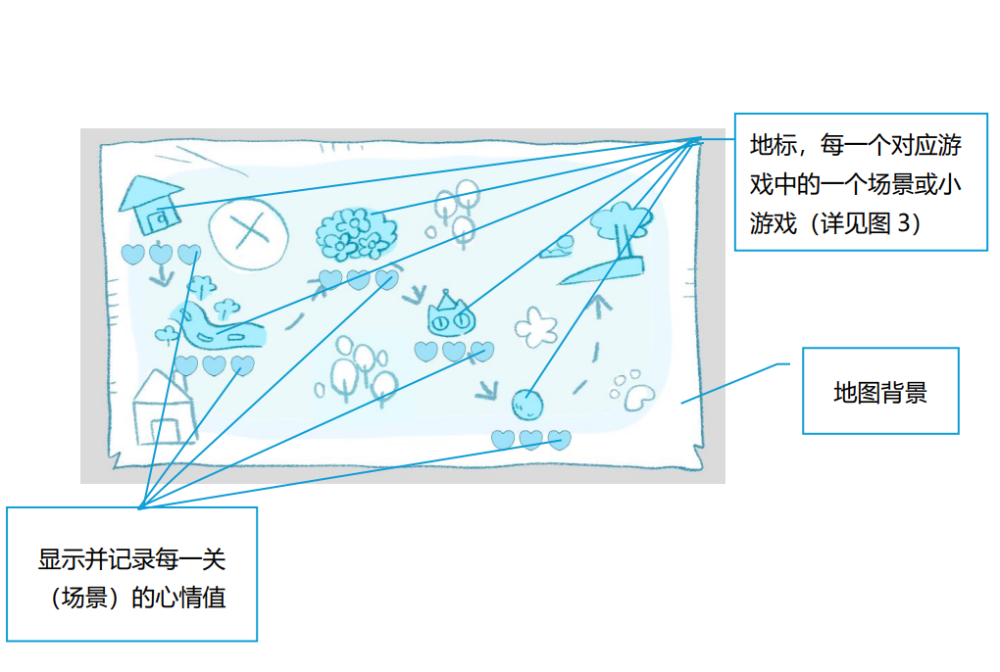
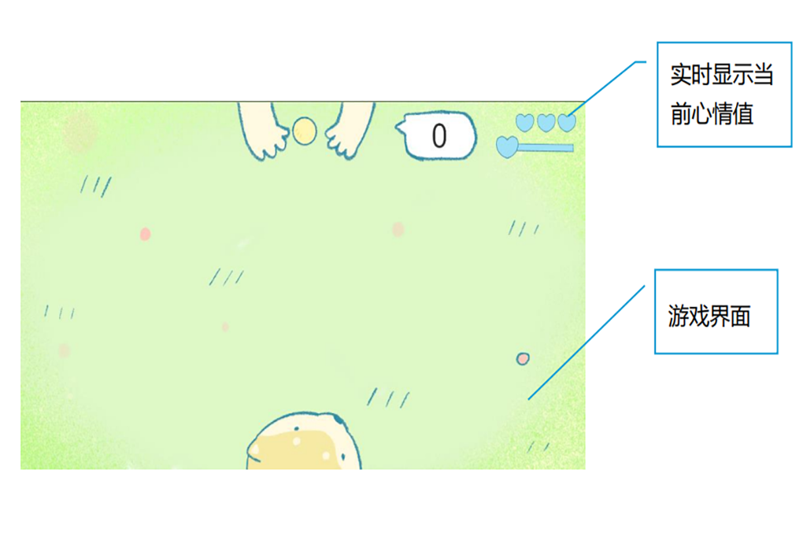
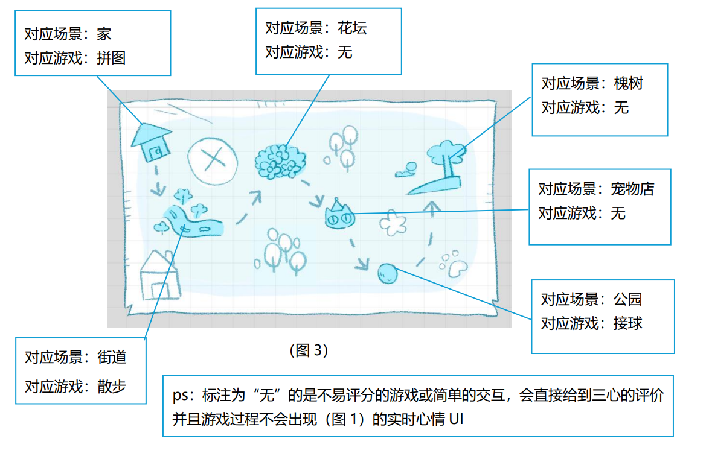
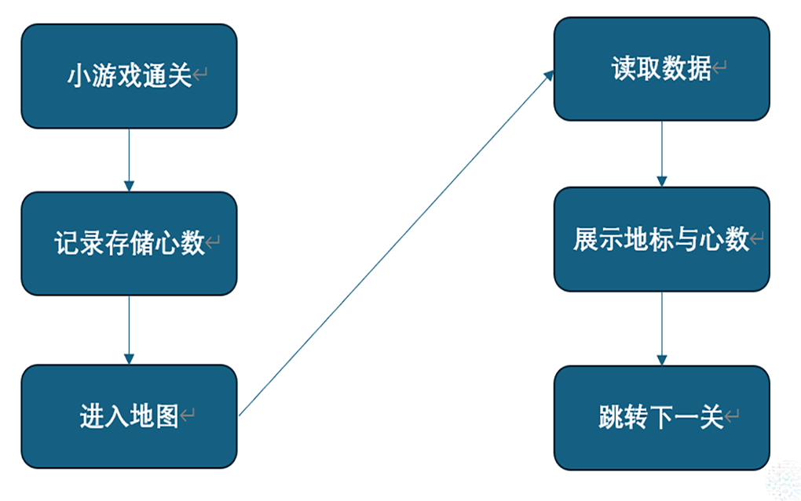

一套贯穿 24 个场景的进度与情感反馈系统。 玩家的表现被量化为 1–3 心,驱动地图枢纽推进, 让"玩得好"和"走得远"成为同一件事。
WALK 是一只名为"豆花"的狗狗的生命旅程。 24 个场景被叙事串成一条线,每段记忆里藏着一种轻量小游戏—— 拼图、张力条、转时钟、填色、刮刮乐、接球、气泡…… 玩家用这些隐喻动作,参与一次告别。
项目最大的挑战不在单个小游戏,而在于如何把十几种玩法缝成一条连贯的情感曲线。 我设计了一套"心情心数系统"作为骨架:每完成一个小游戏,按表现给 1–3 心, 心数累积驱动地图枢纽,枢纽再决定下一段旅程打开与否。 这样,玩家的"玩得好不好"和"故事能不能继续"被绑在了同一根线上。




一个静态类,管住全游戏的"表现 → 反馈 → 推进"链路。
两块记忆碎片闪烁,提示玩家可点。完成拼图 1(puzzle4)后,第二块碎片才开始闪烁。
点击碎片进入拼图。完成后 GameProgress.puzzle4Done = true,回到中枢。
第二块碎片亮起。完成后 puzzle9Done = true,触发门动画与对白。
门闪烁可点。设置 nextMapDestination,进入地图枢纽,开始后续旅程。
地图枢纽(SceneMap)不是简单跳转,而是一个情感反馈面板。
已完成关卡的地标用 pop-in 动画弹入,心情图标按心数显示(1/2/3 心对应三种表情)。
玩家能直观看到"自己玩得怎么样",而下一站由 nextMapDestination 静态变量动态决定,
让流程既有秩序,又不死板。
传统的"通关即过"会让小游戏沦为走过场。 把表现量化为心数,再让心数影响地图反馈, 玩家就有了"想再试一次"的理由——不是为了卡关,而是为了那颗心。
GetEstimatedPuzzleStars() 在玩家拼图过程中实时返回当前心数,
UI 上的心情图标会随用时从 3 心变 2 心再变 1 心。
这种"看得见的倒计时"制造了温和的紧张感,而不是终点才告知结果。
completedGames、poppedLandmarks、poppedMoods
三个 HashSet 分开管"做完""地标弹过""心情弹过"。
这样回访地图时,已完成的地标不会再弹一次动画,但心情图标会保留——
既不啰嗦,也不抹掉玩家的成绩。
MoodSystem 是纯静态类,数据在进程内全局有效。
配合场景转场单例的 DontDestroyOnLoad,
24 个场景之间无需 PlayerPrefs 存档,就能无缝传递状态。
代价是退出游戏即丢失——对一个短篇叙事游戏来说,刚好够用。